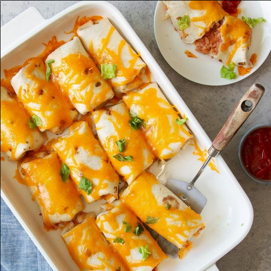

Bean Burrito
Incredients
- 1 can (16 ounces) refried beans
- 1 cup salsa
- 1 cup cooked long grain rice
- 2 cups shredded cheddar cheese, divided
- 12 flour tortillas (6 inches)
- Shredded lettuce, optional
Directions
-
Preheat oven to 375°. In a large bowl, combine beans, salsa,
rice and 1 cup cheese. Spoon about 1/3 cup off-center on each
tortilla. Fold the sides and ends over filling and roll up.
-
Arrange burritos in a greased 13x9-in. baking dish. Sprinkle with
remaining 1 cup cheese. Cover and bake until heated through, 20-25
minutes. If desired, top with lettuce.
Nutrition Facts
- 2 burritos: 216 calories
- 9g fat (4g saturated fat)
- 23mg cholesterol
- 544mg sodium
- 24g carbohydrate (1g sugars, 3g fiber)
- 9g protein
Diabetic Echanges:
- 1-1/2 starch
- 1 lean meat
- 1 fat